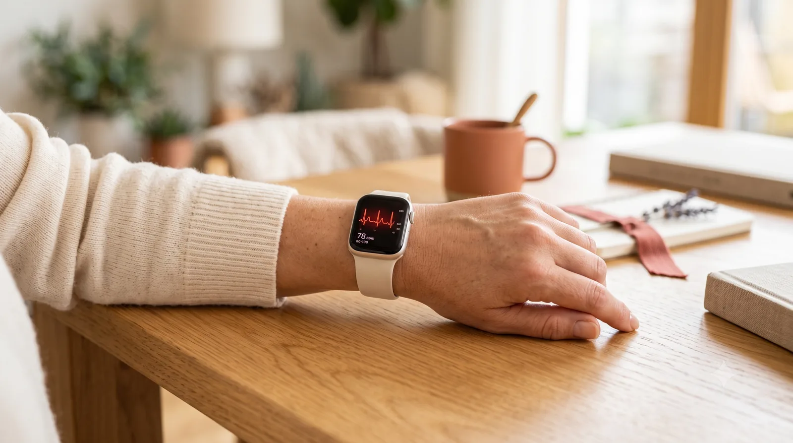

Cardiólogo en Elche · Clínica Elche Salud
Qué significa esa alerta, si es fiable y qué hacer

Cada vez más personas llegan a consulta con una notificación en el móvil: «posible fibrilación auricular». Es un motivo de consulta nuevo, que hace unos años no existía, y que genera bastante inquietud. Esta página explica qué significa ese aviso y qué conviene hacer.
Los relojes y anillos inteligentes usan dos tecnologías distintas, y conviene no confundirlas.
Es el que funciona de forma continua, en segundo plano. Una luz verde en la parte trasera del reloj detecta cómo cambia el volumen de sangre bajo la piel con cada latido. De ahí saca la frecuencia cardíaca y detecta si el ritmo es regular o irregular.
Lo tienen algunos modelos y hay que activarlo manualmente, poniendo un dedo sobre la corona durante medio minuto. Registra la actividad eléctrica del corazón, igual que un electrocardiograma de consulta pero con una sola derivación en lugar de doce.
La diferencia importa: el sensor de luz sugiere que algo puede estar pasando; el electrocardiograma del reloj registra el ritmo y deja un trazado que un cardiólogo puede revisar.
Estos dispositivos han demostrado ser razonablemente buenos detectando fibrilación auricular, pero tienen dos limitaciones que conviene entender.
Dan falsos positivos. Un aviso no equivale a un diagnóstico. El movimiento, un tatuaje, la correa floja, el frío o simplemente unos latidos extra benignos pueden generar una alerta. Una parte importante de las notificaciones no corresponde a fibrilación auricular real.
También se les escapan casos. Que el reloj no avise no descarta nada. Si tienes síntomas, la ausencia de alertas no es un motivo para no consultar.
Dicho esto, no son un juguete. Hay personas que han llegado a un diagnóstico de fibrilación auricular gracias a un aviso del reloj, y eso tiene valor real: es una arritmia que a menudo no da síntomas y que conviene detectar.
Una notificación aislada, sin síntomas, no es una urgencia. La fibrilación auricular no es una situación que requiera acudir corriendo a urgencias si te encuentras bien.
Si tu reloj hace electrocardiograma, hazlo en ese momento y expórtalo a PDF desde la aplicación. Ese trazado es información clínica útil.
Si notas algo (palpitaciones, cansancio, falta de aire) y cuánto dura. La correlación entre síntoma y registro es lo que más ayuda.
Pide cita con un cardiólogo llevando los registros. El objetivo es confirmar o descartar, no quedarse con la duda.
Independientemente de lo que diga el reloj, hay situaciones que requieren atención inmediata:
En estos casos el reloj es lo de menos. Hay que buscar atención médica.
El aviso del reloj es un punto de partida, no un diagnóstico. En consulta se confirma con un electrocardiograma de doce derivaciones, que es el estándar.
Si en ese momento el ritmo es normal —lo habitual, porque la fibrilación auricular suele ir y venir— se completa con un Holter de 24 horas, que registra el ritmo de forma continua mientras haces vida normal.
También se valora el corazón con un ecocardiograma y se revisa la analítica, porque hay causas tratables que pueden estar detrás.
Con toda esa información se decide si hay algo que tratar y qué. Puedes leer más sobre esta arritmia en nuestra página sobre fibrilación auricular.
Sirven, con matices.
Como herramienta de cribado en personas con riesgo —edad avanzada, hipertensión, antecedentes— pueden detectar arritmias que de otro modo pasarían desapercibidas. Eso es valioso.
Como fuente de tranquilidad no funcionan tan bien: en personas jóvenes y sanas generan más falsas alarmas que hallazgos reales, y a veces bastante ansiedad.
La regla práctica es sencilla: úsalos como una señal que te lleva a consultar, no como un sustituto de la consulta. Un reloj no diagnostica, pero puede ser el motivo por el que llegues a tiempo.
Resumen visual del impacto cardiovascular de la apnea del sueño: mecanismos, consecuencias y qué puedes hacer.
Consulta cardiológica en Elche. Electrocardiograma, ecocardiograma y Holter de 24 horas en la misma clínica.